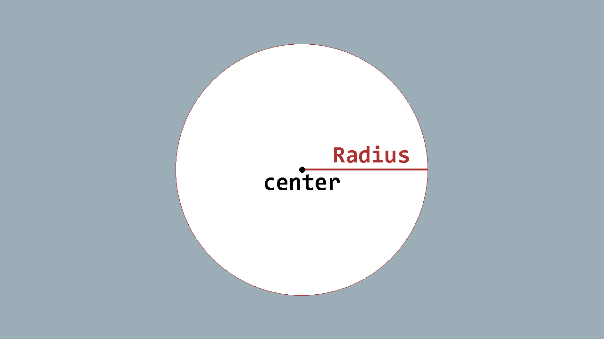
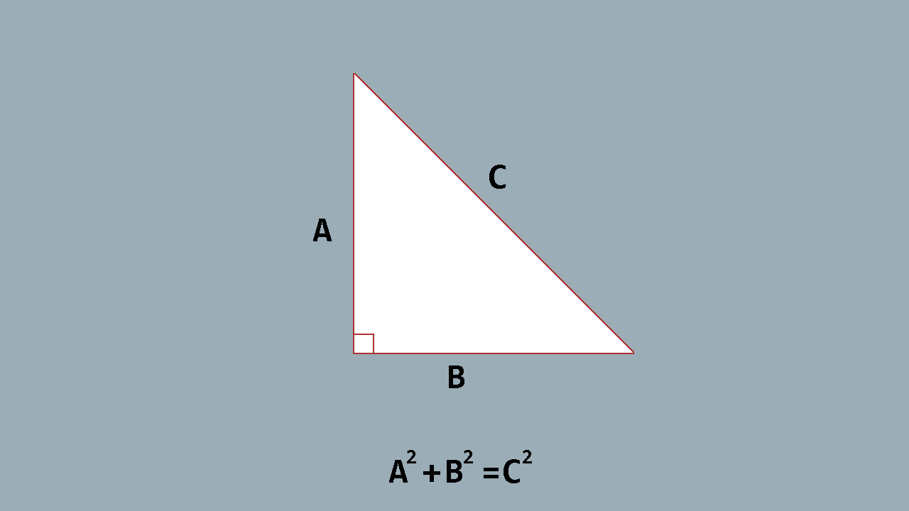
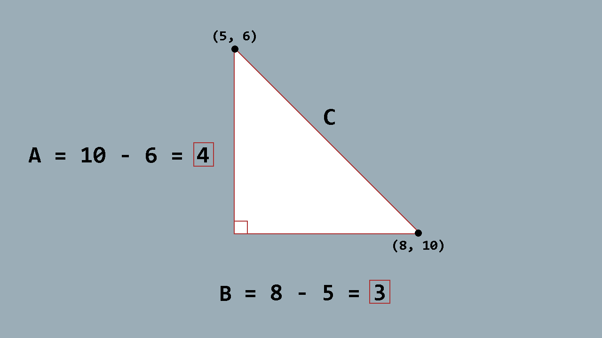
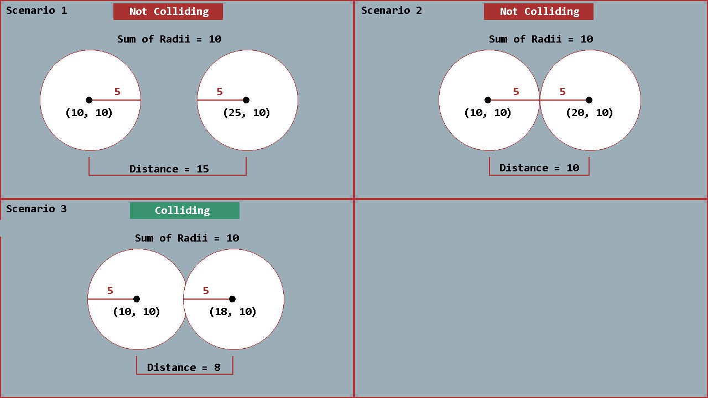

Circle Collision
Not every object in a game can or should be defined as rectangular. Sometimes we need to use a circle. We can't use AABB collision detection as discussed on the previous page because it is strictly for rectangles only. Instead, we'll need to use a small amount of trigonometry when it comes to circles. Don't let this care you though
Warning
The method used on this page to detect collision will only work for a circle. This means that any given point on the circle's perimeter is equal distance to the center of the circle. This method of collision detection will not work for ellipses.
Defining a Circle
Before we begin, let's define a few terms about circles. First, take a look at the image below

A circle can be defines by two distinct properties
- An x- and y-coordinate position for hte center point of the circle
- The radius of the circle, which is the distance from the center to any given point on the circle's perimeter.
From the second point above, we can safely assume that given any (x, y) point, if hte distance from that point to the circle's center is less than the radius of the circle, then it will be contained within the circle's perimiter.
This means that we're going to need a method of calculating the distance between any two points.
Calculating Distance Between Points
When it comes to calculating the distance between two points, thankfully Pythagoras has us covered. Most should be familar with Pythagorean's Theorem

The theorem states that
Given the length of two sides (A and B) of a right triangle, the hypotenuse (C) is equal to √(A2 + B2)
So how can we use this to get the distance between any two points? Imagine that the two points give are located at the start and end points of the hypotenuse of the triangle. If we take the distance of the x-coordinates of each point, that will give us the value of B, and the distance between the y-coordinates of each point will give us the value of A

Now all we need to do is plug those values into the formula √(A2 + B2). Given the example above that would be √(32 + 42) = √(25) = 5.
Detecting Circle Collision
When it comes to detecting collision between two circles, what we are really checking for is if any given point within one circle's perimeter is contained within the perimeter of another circle.
We know from the definitions above that any given point that is in a circle's perimeter cannot be any distance further from the center than the length of the radius. So if all points in one circle are within its radius distance, and all points of another circle are within its radius distance, then the distance between the centers of both circles must be greater than or equal to the sum of their radii; otherwise they are colliding
To further illustrate this, take a look at the following three scenarios in the image below:

in the first two scenarios, visually w can see that the circles are not colliding. We can prove this by showing the distance between their centers is greater than the sum of the radii.
In the third scenario, these circles are visually colliding. We can prove it by showing the distance between the centers is less than the sum of the radii.
So now that we know how to detect a circle collision, let's create teh code in our MonoGame project to handle this.
The Code
Before we can add circle collision checks code, we first need a way of defining a circle. Unlike the Rectangle struct, MonoGame does not provide a built-in struct for a circle. So we need to create one ourselves.
Create a new class file in the game project called Circle.cs and add the following code to it
using Microsoft.Xna.Framework;
/// <summary>
/// A simple structure that defines the values of a circle.
/// </summary>
public struct Circle
{
/// <summary>
/// The center xy-coordinate location of the circle.
/// </summary>
public Point Center;
/// <summary>
/// The length of the radius of the circle.
/// </summary>
public int Radius;
/// <summary>
/// Creates a new Circle structure.
/// </summary>
/// <param name="x">
/// The x-coordinate position of the center of the circle.
/// </param>
/// <param name="y">
/// The y-coordinate position of the center of the circle.
/// </param>
/// <param name="radius">
/// The length of the radius of the circle.
/// </param>
public Circle(int x, int y, int radius)
{
Center = new Point(x, y);
Radius = radius;
}
}
For the purposes of this tutorial, these are all the values we'll need for a circle.
- The
Centerfield will be used to hold the x- and y-coordinate location of the center point of the circle. - The
Radiusfield will hold the value that defines the length of the radius - The constructor has three parameters,
int x,int y, andint radiuswhich are used to instantiate theCenterfield and theRadiusfield
Next, we need to add the collision detection check to our CollisionCheck class. Open the CollisionCheck.cs class file that we created previously and add the following new methods
/// <summary>
/// Calculates the distance between the center points of two circles.
/// </summary>
/// <param name="circleA">
/// The first circle.
/// </param>
/// <param name="circleB">
/// The second circle.
/// </param>
/// <returns>
/// The distance between the center point of both circles.
/// </returns>
public static float Distance(this Circle circleA, Circle circleB)
{
// Get the distance between the x-coordinates of each circle.
int dx = circleA.Center.X - circleB.Center.X;
// Get the distance between the y-coordinates of each circle.
int dy = circleA.Center.Y - circleB.Center.Y;
// Use Pythagorean's Theorem to calculate the distance between the two and return it.
return (float)Math.Sqrt((dx * dx) + (dy * dy));
}
/// <summary>
/// Checks for collision between two circle structures.
/// </summary>
/// <param name="circleA">
/// The first circle.
/// </param>
/// <param name="circleB">
/// The second circle.
/// </param>
/// <returns>
/// True if the two circles are colliding; otherwise, false.
/// </returns>
public static bool Circle(Circle circleA, Circle circleB)
{
// Get the sum of the radii
int radii = circleA.Radius + circleB.Radius;
// Get the distance from the center of each circle.
float distance = Distance(circleA, circleB);
// If the distance is less than the radii sum, then it is a collision
return distance < radii;
}
The Distance(Circle, Circle) extension method takes two Circle values and, using Pythagorean's THeorem as discussed before, calculates the distance between the two points and returns the value back.
The Circle(Circle, Circle) method is where the actual collision checks occurs.
- First, it calculates the sum of hte two radii of the circles.
- Next it then calls the
Distance(Circle, Circle)extension method to get the distance between the two centers. - Finally, it compares the distance to the radii, and if the distance is less than the radii it returns
true; otherwise, it returnsfalse.
Testing For Collision
Now that we have a way to detect collision between circles, we need to test the code to make sure it's functioning properly. We're going ot need some graphics to reprsent our circles. There are many ways of rendering a 2D circle, some more complicated than others. For the purposes of this tutorial, however, we're going to just use a simple Texture2D to represent out circles.
The circle image we'll be using is a 64px x 64px white circle. You can download the already prepared version that is used for this tutorial by right-clicking the circle image below and selecting Save Image As...
Once downloaded, add the image to the game project using the MGCB Editor. If you're unfamilar with how to add content files to your game, please read the official MonoGame documentation
Now that we have the white circle image added that we can draw to represent out circles, we need to update Game1. Open the Game1.cs class file and perform the following
- Remove the
Rectangle _boxAfield. - Remove the
Rectangle _boxBfield. - Remove the
Texture2D _pixelfield. - Add the following new fields:
// Represents the first circle (A).
private Circle _circleA;
// Represents the second circe (B).
private Circle _circleB;
// The texture used to draw the circles.
private Texture2D _circleTexture;
_circleAwil hold the values of our firstCircleand_circleBwill hold the values of our secondCircle._circleTexturewill be used to hold theTexture2Dthat we'll load from the content manager to render our circles with.
Next, we need to update the Initialize() method. Locate the Initialize() method in the Game1 class and change it to the following:
protected override void Initialize()
{
base.Initialize();
// Define the x and y center, and the radius of each circle.
// The circle image is 64px x 64px so the radius is 32px.
_circleA = new Circle(100, 100, 32);
_circleB = new Circle(200, 200, 32);
}
Here we are now initializing our two circles. We set the x- and y-location for both, and the radius of both is 32. We used 32 because the Texture2D image of a circle we are using is 64px x 64px and half of 64px is 32.
Next, locate the LoadContent() method in the Game1 class and change it to the following:
protected override void LoadContent()
{
_spriteBatch = new SpriteBatch(GraphicsDevice);
// Create the 1x1 pixel texture
_pixel = new Texture2D(GraphicsDevice, 1, 1);
_pixel.SetData<Color>(new Color[] { Color.White });
// Load the circle texture
_circleTexture = Content.Load<Texture2D>("white-circle");
}
Here we've just added the code to load the white circel image we created and store it int he _circleTexture instance.
Now, locate the Update(GameTime) method in the Game1 class and change it to the following:
protected override void Update(GameTime gameTime)
{
// Update the input states.
_prevKeyboardState = _curKeyboardState;
_curKeyboardState = Keyboard.GetState();
MoveCircleA();
MoveCircleB();
// Check if _boxA and _boxB are colliding.
_areColliding = CollisionChecks.Circle(_circleA, _circleB);
base.Update(gameTime);
}
Then remove the MoveBoxA and MoveBoxB methods and replace them with the following:
/// <summary>
/// Moves circle (A) based on keyboard input.
/// </summary>
private void MoveCircleA()
{
if(_curKeyboardState.IsKeyDown(Keys.W))
{
_circleA.Center.Y--;
}
else if(_curKeyboardState.IsKeyDown(Keys.S))
{
_circleA.Center.Y++;
}
if (_curKeyboardState.IsKeyDown(Keys.A))
{
_circleA.Center.X--;
}
else if (_curKeyboardState.IsKeyDown(Keys.D))
{
_circleA.Center.X++;
}
}
/// <summary>
/// Moves circle (B) based on keyboard input.
/// </summary>
private void MoveCircleB()
{
if (_curKeyboardState.IsKeyDown(Keys.Up))
{
_circleB.Center.Y--;
}
else if (_curKeyboardState.IsKeyDown(Keys.Down))
{
_circleB.Center.Y++;
}
if (_curKeyboardState.IsKeyDown(Keys.Left))
{
_circleB.Center.X--;
}
else if (_curKeyboardState.IsKeyDown(Keys.Right))
{
_circleB.Center.X++;
}
}
To go over the changes we've just made for the Update(GameTime) method
- We update the values of the
_prevKeyboardStateand_curKeyboardState. MoveCircleA()is called which checks W, S, A, and D key presses to move_boxA.MoveCircleB()is called, which checks Up, Down, Left, and Right key presses to move_boxB.CollisionChecks.Circle(Circle, Circle)is called, giving it both_circleAand_circleBto check if they are colliding. The resulttrueorfalseis returned back and stored in_areColliding.
Finally, we need to draw the circles to the screen. Locate the Draw(GameTime) method in the Game1 class and change it to the following:
protected override void Draw(GameTime gameTime)
{
GraphicsDevice.Clear(Color.Black);
// Draw the bounding boxes as white rectangles.
Color color = Color.White;
// If the bounding boxes are colliding, make them red instead.
if(_areColliding)
{
color = Color.Red;
}
_spriteBatch.Begin();
_spriteBatch.Draw(texture: _circleTexture,
position: _circleA.Center.ToVector2(),
sourceRectangle: null,
color: color,
rotation: 0.0f,
origin: new Vector2(_circleTexture.Width, _circleTexture.Height) * 0.5f,
scale: 1.0f,
effects: SpriteEffects.None,
layerDepth: 0.0f);
_spriteBatch.Draw(texture: _circleTexture,
position: _circleB.Center.ToVector2(),
sourceRectangle: null,
color: color,
rotation: 0.0f,
origin: new Vector2(_circleTexture.Width, _circleTexture.Height) * 0.5f,
scale: 1.0f,
effects: SpriteEffects.None,
layerDepth: 0.0f);
_spriteBatch.End();
base.Draw(gameTime);
}
Just as with the previous tutorial on AABB, we first create a Color instance defaulted to Color.White. Then we check fi the two circles are colliding and, if so, change the color to Color.Red Then we draw the two cicles.
Here in the _spriteBatch.Draw method I'm using the SpriteBatch.Draw(Texture2D, Vector2, Rectangle?, Color, float, Vector2, float, SpriteEffects, float) overload so that we can se the origin parameter to half the width and height of the _circleTexture. This makes it so when rendered, the cneter of the texture is drawn at hte position given, which makes sense since we use the center of the circle as it's position.
If you run the game at this point, you should see two white circles on the screen. Use W, S, A, and D keys to move the left circle, and Up, Down, Left, and Right keys to move the right circle. If you make them collide, they will both turn red. Moving them apart so they are no longer colliding will change them back to white.
Conclusion
On this page of the tutorial, we defined what a circle is, how to calculate the distance between two circle, and how to check if they are colliding. When then implemented this into our MonoGame project and tested collision between the two circles in our game.